ATTOMO Digital
Designing a website to attract high-profile clients
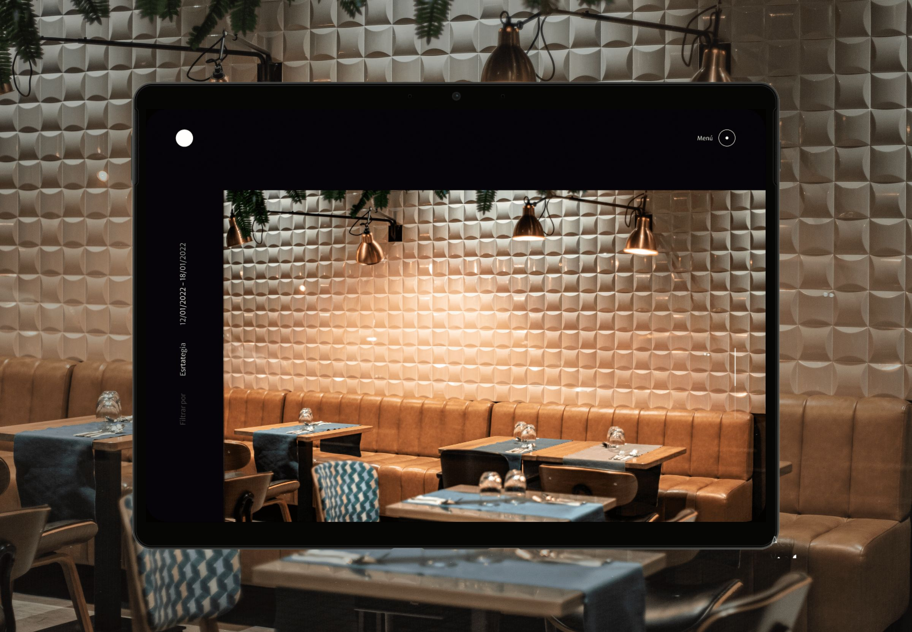
ATTOMO Digital didn’t have a website. For a technology consultancy trying to attract high-profile clients, that absence was saying something. The founders came to me to make a first impression strong enough to open doors that cold outreach couldn’t. My challenge was to design something that felt like the kind of company they were becoming, not the one they had been.
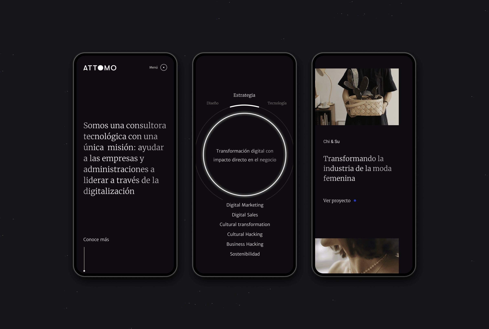
Visual direction
I suggested keeping the logo’s black as the primary color and adding a vibrant accent color to bring a modern edge. The neon treatment in the services area, combined with gradient text, gives the site a dynamic, futuristic feel. I chose scroll-triggered transitions between elements to evoke both innovation and refinement.
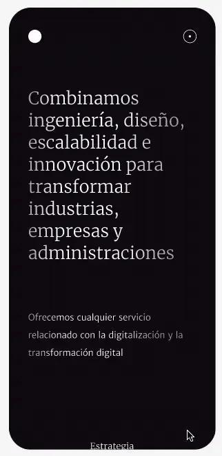
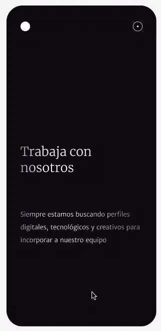
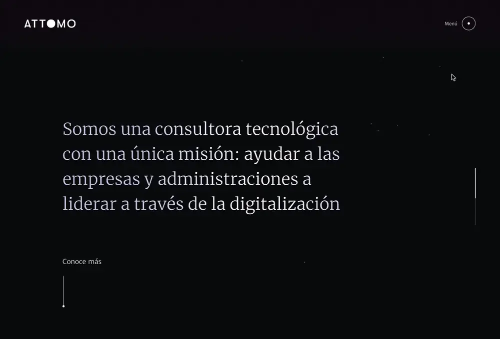
Success stories
To attract clients from different industries with different goals, a complete, well-organized case studies section was essential. A filter system was the right solution to help users quickly find the cases relevant to the service they were looking for.
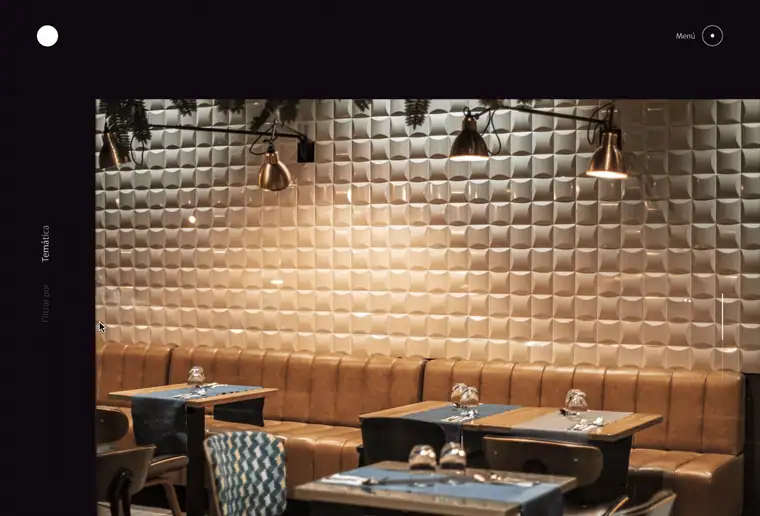
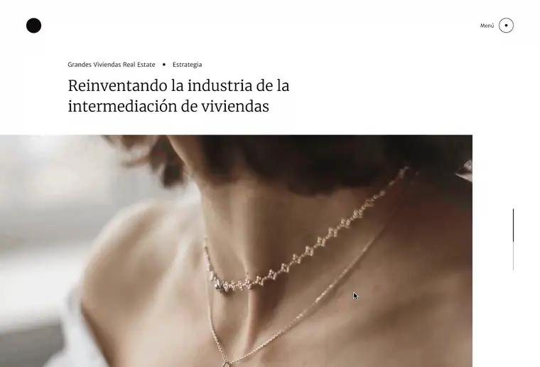
ATTOMO Trends
The blog was key to positioning the consultancy as a technology thought leader while also driving organic traffic to the site.
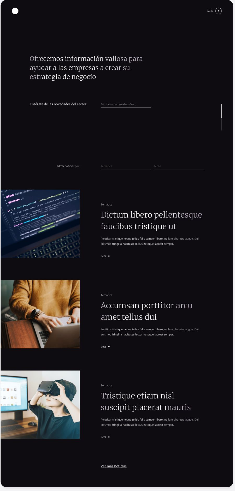
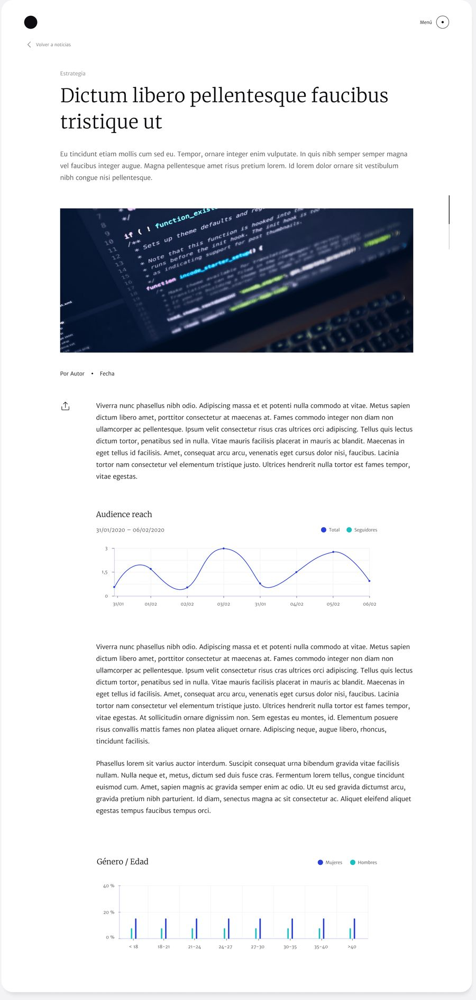
ATTOMO Digital Space
ATTOMO wanted a section to allow office space rentals for multiple uses. The page included hourly rates and a contact form to book a date.
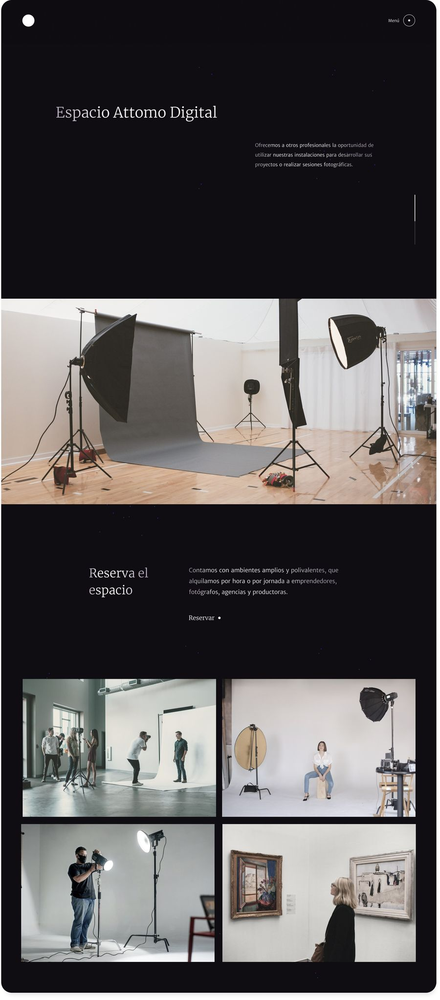
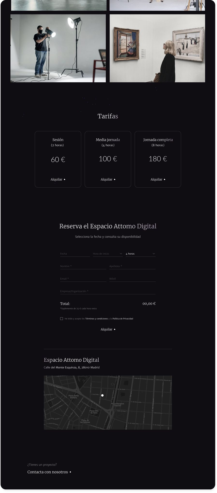
About ATTOMO
To help potential clients and collaborators learn more about the consultancy, I designed two key sections. “About us” presents the company’s story and core values. “Careers” shows open positions, giving interested candidates the opportunity to join the team.
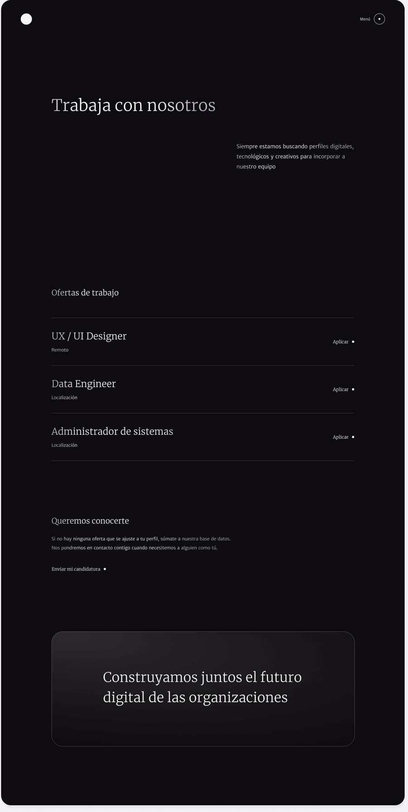
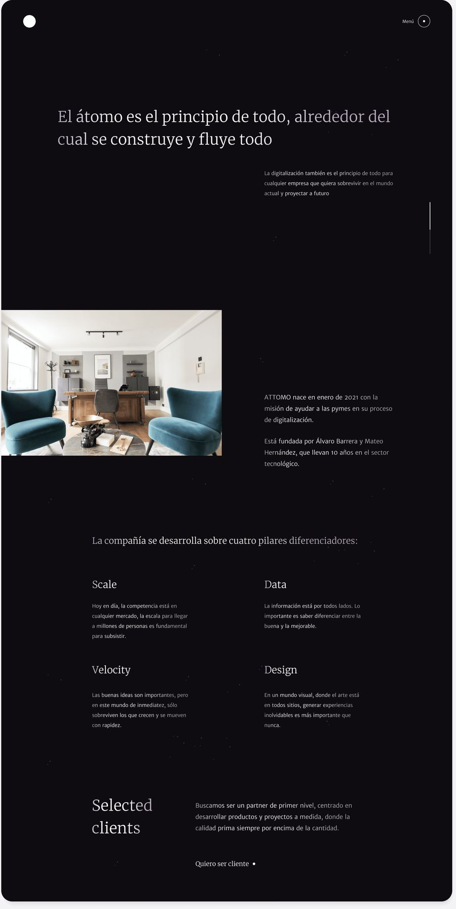
Result
I don’t have conversion data from this project. What I do know is that ATTOMO started landing new clients after the site launched. For a consultancy that previously had no digital presence, that shift mattered. If I were measuring it today, I’d track whether the right type of client was reaching out, not just how many, because the brief was never about volume. It was about signal.